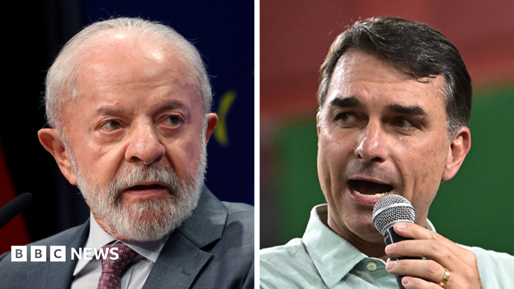

World · 04 Oct 2026
Brazil Votes in High-Stakes Presidential Race as Lula Faces Flávio Bolsonaro

Voters in Brazil have cast ballots in the first round of a closely watched presidential election pitting incumbent Luiz Inácio Lula da Silva against far-right senator Flávio Bolsonaro.
Voters across Brazil have participated in the first round of a pivotal presidential election that pits incumbent left-wing President Luiz Inácio Lula da Silva against far-right Senator Flávio Bolsonaro. The high-stakes contest is expected to shape the political trajectory of Latin America's largest nation as well as the broader region.
A Tight Contest at the Ballot Box
Pre-election surveys pointed to a neck-and-neck contest between the two main contenders, as reported by both the BBC and The Guardian. Brazil conducts direct presidential elections under rules requiring a candidate to win more than 50 percent of the valid votes to secure an outright victory and avoid a runoff contest.
Polling stations across the country officially closed at 17:00 BRT (21:00 BST), according to election updates tracked by The Guardian's first-round coverage, initiating the ballot-counting process to establish whether either candidate has crossed the threshold necessary to avoid a second round.
The Contenders and the Political Landscape
President Lula is pursuing a fourth non-consecutive term in office. Challenging him is Flávio Bolsonaro, a federal senator and the son of former president Jair Bolsonaro. The former president is currently serving a 27-year prison sentence following a conviction for orchestrating an attempted military coup in the aftermath of his defeat in the 2022 presidential election.
The younger Bolsonaro has campaigned as a key regional partner of conservative forces, maintaining close ties with United States President Donald Trump. The election highlights enduring political polarization across Brazilian society following years of legal and political battles stemming from past election disputes.
Regional Ramifications
Beyond Brazil's borders, the vote is being scrutinized as an important benchmark for ideological alignments across Latin America. As detailed by The Guardian, right-leaning movements have recorded a string of recent victories across the hemisphere.
Following an address to the United Nations General Assembly in September, Donald Trump highlighted that conservative candidates had captured seven regional presidential elections since the start of his second term, pointing to the expanding influence of the Shield of the Americas, an anti-cartel coalition comprising 15 right- and far-right-led regional administrations.
With polls closed, election authorities are compiling results to determine whether the contest will be decided immediately or proceed to a head-to-head second-round vote.
Sources
- https://www.bbc.co.uk/news/articles/c6wyz0r2n0djo?at_medium=RSS&at_campaign=rss
- https://www.theguardian.com/world/2026/oct/03/brazil-election-lula-bolsonaro-trump
- https://www.theguardian.com/world/2026/oct/04/brazil-presidential-election-lula-flavio-bolsonaro
Sources
This article was produced by the C. O. Eric AI Newsroom from the cited sources. It is published only after automated evidence and safety checks.